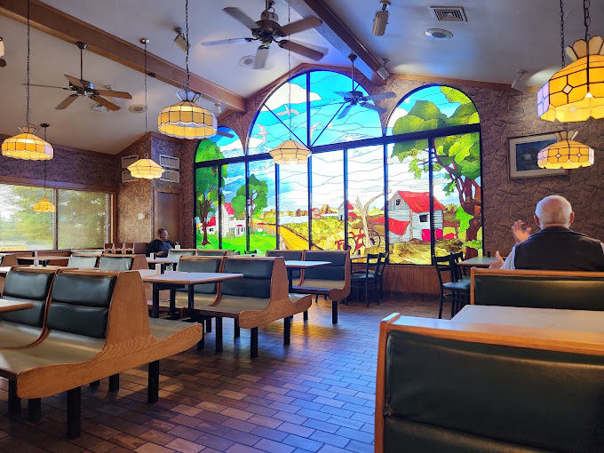
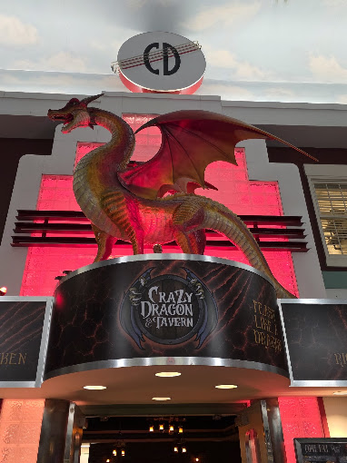
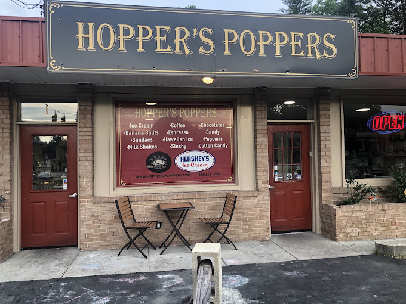
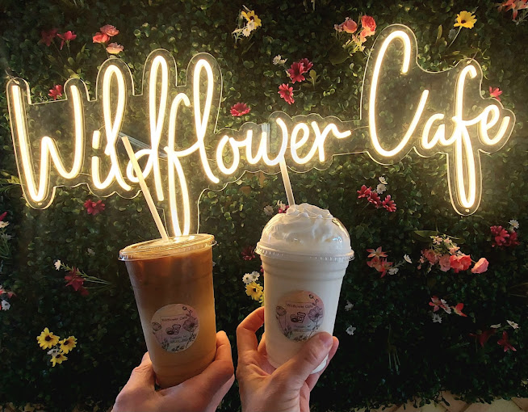
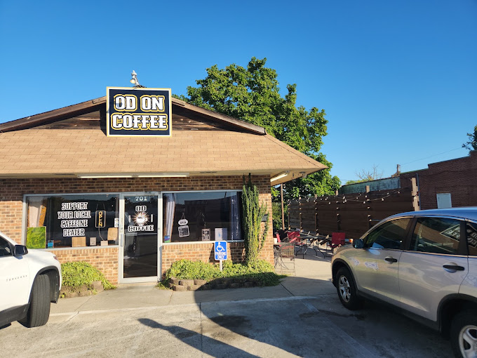
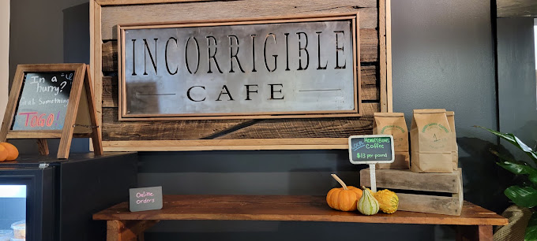
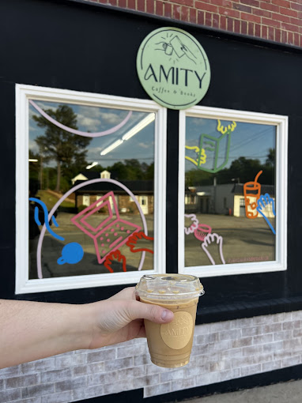
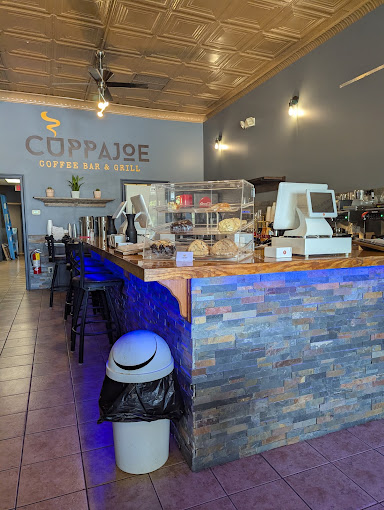
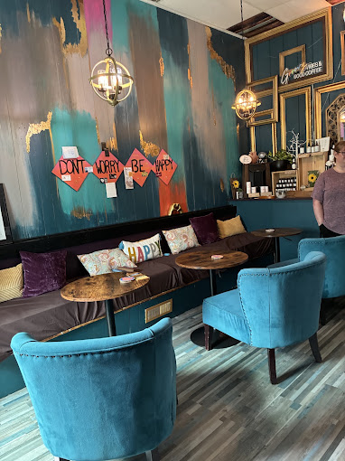

Eating out with a toddler is its own kind of adventure, so I've tried to be honest about what each place is actually like for families. Roxboro doesn't have a long list of restaurants, but the ones we keep going back to are friendly to kids, and a few are right along the downtown walks I wrote about on the Home page.
Sit-Down Meals
Stuart's Family Grille
Good for: breakfast and lunch with kids of any age
Address: 104 S Madison Blvd, Roxboro, NC 27573
Hours:
- Mon-Sat - 6am-3pm
- Sunday - 8am-3pm
Stuart's is a family restaurant at 104 S Madison Blvd that serves American-style breakfast, lunch, and dinner, and it's easy to find from downtown.

Crazy Dragon & Tavern at Palace Pointe
Good for: dinner with the family, kids 12 and under eat free Sundays
Address:
Hours:
- Sunday - 12pm-9pm
- Mon-Thu - 4pm-9pm
- Friday - 4pm-12am
- Saturday - 12pm-12am
Crazy Dragon is the restaurant inside Palace Pointe, and it serves burgers, wings, and pizza. On Sundays, kids 12 and under eat free with a paid adult entrée (dine-in only), which makes it the best deal for a family dinner in town. It sits at 5050 Durham Rd, so you can pair a meal with bowling, skating, or the arcade, though keep in mind it's a tavern, so it gets livelier in the evening.

Treats
Hopper's Poppers
Good for: ice cream, gourmet popcorn, or house-made chocolate goodies
Address: 234 N Madison Blvd, Roxboro, NC 27573
Hours:
- Sunday - 11am-9pm
- Mon-Thu - 8am-9pm
- Friday - 8am-10pm
- Saturday - 10am-10pm
This is more of a treat stop than a meal. Hopper's Poppers at 234 N Madison Blvd sells gourmet popcorn in about ten daily flavors, plus Hershey's ice cream, chocolates, and candied nuts. The shop describes itself as family friendly, with games and play areas for kids.

Coffee
Roxboro went from one coffee shop to a handful, and every one of them is locally owned. Please support these local coffee shops so we can keep them around!
Wildflower Cafe
Good for: coffee with a toddler
Address: 365 Old Durham Rd, Roxboro, NC 27573
Hours:
- Sunday - 7am-1pm
- Monday - Closed
- Tues-Fri - 6am-2pm
- Saturday - 10am-10pm
Wildflower has baked goods, coffee, and a breakfast and lunch menu, and its scones are big enough that one could easily be shared. What sets it apart for families is the drawing table for toddlers and young kids, which keeps little hands busy while you drink your coffee. It's also pet friendly.

OD on Coffee
Good for: coffee on the go
Address: 701 N Main St, Roxboro, NC 27573
Hours:
- Sunday - 8am-2pm
- Mon-Fri - 6:30am-5pm
- Saturday - 7am-4pm
A local favorite, OD on Coffee serves coffee, tea, and pastries, and it's owned by a mother and daughter. They have a drive through and are known for making their coffee strong, so it's the perfect stop if you need an extra boost. Their motto is "Support your local caffeine dealer!"

Incorrigible Cafe
Good for: breakfast or lunch with coffee
Address: 44 Gordon Street, Hall's Way #60, Roxboro, NC 27573
Hours:
- Sun-Mon - Closed
- Tues-Wed - 7:30am-3pm
- Thursday - 7:30am-6pm
- Friday - 7:30am-3pm
- Saturday - 8am-3pm
Located inside the Shops of Hall's Way, Incorrigible is a cafe in uptown Roxboro that serves breakfast and lunch, coffee drinks, and bakery treats, including chicken salad, salads, and parfaits. It has a sit-down dining room as well as to-go orders. One of my favorite things about them is they make their flavored whipped creams and simple syrups in-house, which takes their coffee to another level.

Amity Coffee & Books
Good for: a quiet stop to sip and read
Address: 222 Chub Lake St, Roxboro, NC 27573
Hours:
- Sun-Mon - Closed
- Tues-Thu - 7am-4pm
- Fri-Sat - 8am-5pm
Amity sells coffee and used books, and it started as a mobile coffee and used-book cart before settling into a shop of its own. It's a fitting stop if you like to browse while you sip.

Cuppajoe Coffee Bar & Grill
Good for: coffee with breakfast or lunch
Address: 43 Abbitt St, Roxboro, NC 27573
Hours:
- Sunday - Closed
- Mon-Fri - 7am-4pm
- Saturday - 8am-2pm
Formerly known as Tricia's Espresso, this was the original coffee shop in town. Cuppajoe leans toward food as well as coffee, with breakfast sandwiches, croissants, soup, cinnamon buns, and salads that reviewers like.

Ginger Hearts
Good for: coffee, matcha, and boba
Address: 731 Durham Rd, Roxboro, NC 27573
Hours:
- Sun-Mon - Closed
- Tues-Fri - 8am-7pm
- Saturday - 8am-3pm
Ginger Hearts is a coffee and tea shop, and reviewers rave about the matcha and the hot pretzels with beer cheese. They have hippy vibes, and also sell a variety of herbal tinctures and essential oils. It's also connected to Head Mechanix Beauty Company, so it makes a great place to sip and hang out before getting some much needed TLC.
